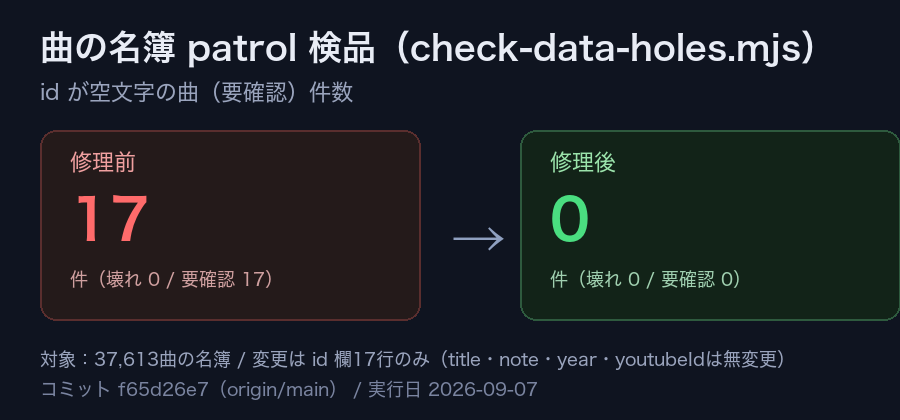

共有資料の一覧
／ 確認ページ #594 曲のid空欄17件を埋めて壊れにくくした（常設594番）
#594 曲のid空欄17件を埋めて壊れにくくした（常設594番）
2026-09-07 実装・main合流・本番(GitHub Pages)反映まで実測確認
37,613曲の名簿のうち、URL・関連付けに使う
id
が空文字のまま登録されていた17曲を、既存の命名ルール(youtubeIdベース／無い場合はアーティストID+番号)で埋めた。見た目の変化は無い、曲が増えても壊れにくくするためのデータ整合性の修理（順番待ちが16本あり列の補充条件(5本未満)に達していなかったため、新規タスク追加の代わりに『壊れにくさ』優先度1位の小さな修理を自分で実行した）。
② 数字
17件→0件
patrol検品(check-data-holes.mjs)の「id空欄」警告件数（修理前→修理後）
37,613曲
対象の名簿全体（今回1件も削除・変更していない）
0件
型チェック(tsc --noEmit)の新規エラー
③ 前と後（実データでのスクリーンショット）
patrol検品の件数（1枚で前後を比較表示）

同上（本番反映後に再実行しても同じ結果）
④ 押せるリンク
本番・虹(laruku)
https://joy-relief-station.lovable.app/cover-guide?artist=laruku&song=song-g9yokp1cnry
本番・大地(BEYOND)
https://joy-relief-station.lovable.app/cover-guide?artist=beyond&song=song-beyond-6
本番・やってみよう(WANIMA)
https://joy-relief-station.lovable.app/cover-guide?artist=wanima&song=song-wanima-1
コミット(main)
https://github.com/tamago2022/joy-relief-station/commit/f65d26e7